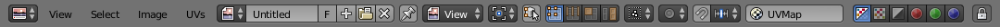

Introduction¶
Header¶

UV/Image Editor header.
The header contains several menus and options for working with UVs.
- Select
- Tools for Selecting UVs.
- UVs
- Contains tools for Unwrapping Meshes and Editing UVs.
- Pivot Point Selector
- Similar to working with Pivot Points in the 3D View.
- Sync Selection
- Keeps UV and Mesh component selections in sync.
- Selection Modes
- Vertex
- Edge
- Face
- Island
- Sticky Selection Mode
- When Sync Selection is disabled, these options control how UVs are selected.
- Proportional Editing
- See Proportional Editing.
- UV Snapping
- Similar to Snapping in the 3D View.
- Active UV Texture Map Selector
- Select which UV texture to use.
- Auto Update Other Affected Windows
- Update other affected windows automatically to reflect changes during interactive operations e.g. transforms.